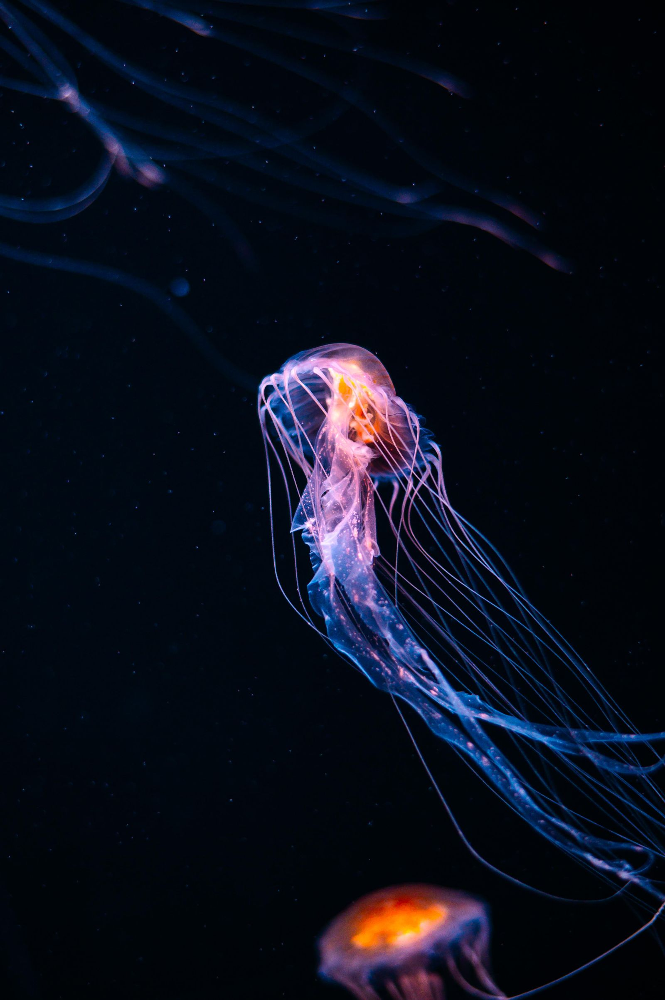
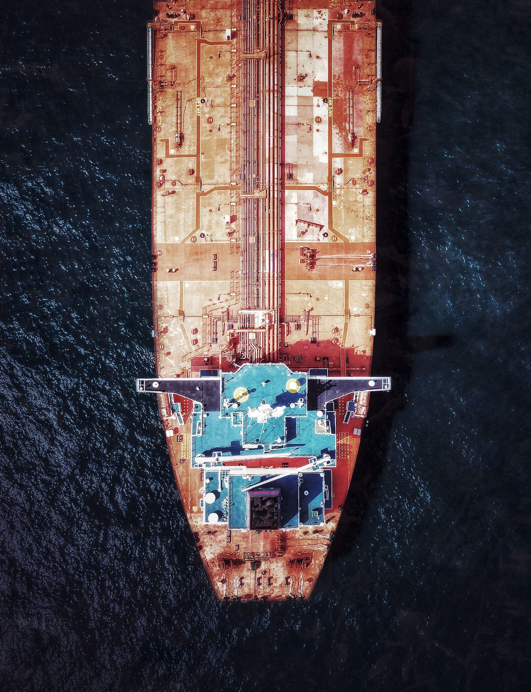

Dr Ruth Calloway · Marine biologist & oceanographer
Pressure, darkness, data.
I lead deep-sea science for expeditions that have to come back with more than photographs: vent fields mapped, samples in the cold chain, numbers that survive peer review. Sixteen research cruises, forty-one vehicle dives, and a standing rule — if the data says the site is dead, we say so, and we move.
Cruises16 since 2011
Vehicle dives41 ROV / HOV
Deepest working dive6,480 m
Sample sets curated210+

LOG 01
Depths, zones and pressures are.
The Descent Explorer
Bands not to scale.Depths, zones and pressures are.
Every engagement I price starts with the same question: how deep, exactly? Depth sets the pressure, the vehicle, the insurance and the bill. Drag the marker down the water column — or use the slider and the logged stops — and read the ocean the way a dive plan does.
Sunlight
0–200 mEpipelagic
0–200 mEpipelagic
Twilight
200–1,000 mMesopelagic
200–1,000 mMesopelagic
Midnight
1,000–4,000 mBathypelagic
1,000–4,000 mBathypelagic
Abyssal
4,000–6,000 mAbyssopelagic
4,000–6,000 mAbyssopelagic
Hadal
6,000 m–floorHadalpelagic
6,000 m–floorHadalpelagic
Depth0 m
ZoneSunlight
Pressure1 atm1 atm at the surface + 1 atm per 10 m down
TemperatureWarm at the surface, cooling with depth
LightFull sunlight — photosynthesis happens here
Log noteThe working day starts here: a ship, a weather window, and a vehicle worth more than the building it launched from.
Currently at the surface — 1 atm. Arrow keys fine-tune; the stops below jump to logged depths.
LOGGED STOPS
THE WORKING, IN PRINT — pressure rises by about 1 atmosphere for every 10 m of depth, on top of the 1 atm at the surface: P = 1 + (depth ÷ 10) atm. At 1,000 m that is 101 atm ≈ 102 bar. It is an approximation — real pressure varies slightly with temperature and salinity — and it is the approximation every dive plan starts from.
| Depth band | Zone | Pressure at base | Temperature | Light |
|---|
LOG 02
Current availability at the foot.
Expeditions & services register
Strongest first.Current availability at the foot.
Vent fields of the Mid-Atlantic RidgePlume survey, ROV mapping and fluid sampling over an active vent field at 2,600 m — science package for an institute cruise with a documentary unit embedded.
VehicleWork-class ROV
Max depth2,640 m
Complete — 2025
Hadal snailfish collectionBaited-trap lander programme in trench water at 6,200 m, collecting under permit for a national museum's type collection.
VehicleTrap landers
Max depth6,210 m
Complete — 2025
Twilight-zone carbon transectRepeat midwater transects measuring the biological carbon pump for an institute consortium — samples in analysis, second season funded.
VehicleROV + CTD rosette
Max depth1,000 m
In analysis — 2026
Lost lander recovery assessmentA moored observatory failed to surface at 4,800 m. Sonar localisation, three costed options, one honest recommendation: leave it. Insurer accepted the report.
VehicleShip sonar + ROV
Max depth4,800 m
Closed — 2024
2027 season — two berths openOne science-lead berth on a funded Atlantic cruise (ROV, to 4,000 m) and one analysis-only commission. Ship time is booked 9–18 months out; talk early.
VehicleBy programme
Max depthTo 6,500 m
Booking — 2027
Full case files — brief, decisions, outcome — on the Expeditions page.
LOG 03
Quoted per engagement in writing.
Fees, in print
GBP, ex-VAT.Quoted per engagement in writing.
Science lead at seaChief-scientist duties, dive planning, watch rota — per 24-hour sea day
£1,250 / day
Planning & mobilisationCruise planning, risk assessments, kit lists — per alongside day
£650 / day
Water-sample chemistry ashoreNutrients, oxygen, carbonate system — per sample, lab invoice passed through
£38 / sample
eDNA metabarcodingExtraction, sequencing run share, bioinformatics — per sample
£165 / sample
Specimen identification & curationSorting, ID to lowest defensible taxon, museum-grade records — per lot
£95 / lot
Cruise report & data packageFixed per expedition: narrative report, cleaned data, sample catalogue
£4,800 fixed
Documentary & media consultingAccuracy, access planning, on-board science producing
£700 / day
On-camera daysInterview and dive commentary, rights as contracted
£950 / day
The honest line in every budget: ship time
A global-class research vessel typically costs £30,000–£55,000 per day at sea, chartered through the institute or funder — before a single scientist is paid. It is routinely 95% of an expedition budget, and it is not my fee.
What moves the price of the science itself: sea days, vehicle class (a crewed submersible day costs the programme far more than an ROV day), sample count, turnaround, and whether the site sits inside a protected area with its own permit conditions.
Anyone who quotes you deep-sea science without talking about ship time is not quoting deep-sea science.

LOG 04
it describes.
Word from the surface
Attached to the workit describes.
“She told us on day two that the vent field we'd sailed out to film was probably extinct — and showed us the data to prove it. Then she followed the plume and found the active field four hundred metres east. That honesty is why the film works, and why the science in it is real.”
Planning something that goes deep?
Berths and analysis slots are allocated in the order enquiries arrive. Ship time waits for no one.